Tsubata, Ishikawa: things to do, food and stays
Tsubata · Ishikawa
Tsubata
Highlighted on the Ishikawa map.

Stay
勝崎館
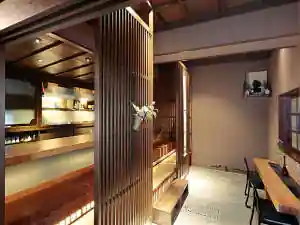
Kachi Saki Kan
道の駅 倶利伽羅塾（くりからじゅく）
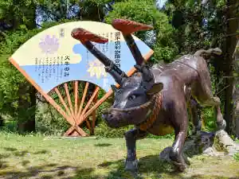
Michi No Eki Kurikara Juku (Kurikarajuku)
河愛の里Ｋｉｎｓｃｈｕｌｅ
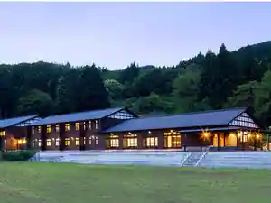
Kawa Ai No Sato Kinschule
Dining
ミエル
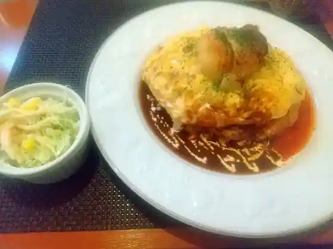
Mieru
麺屋大河 金澤タンメン
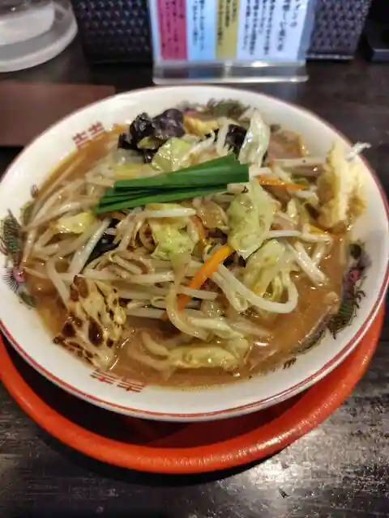
Men Ya Taiga Kanazawa Tanmen
中華萬菜赤兎
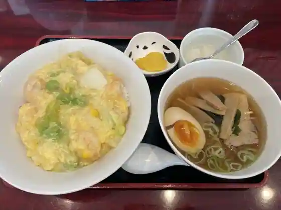
Chuka Man Na Sekito
かほくがた牧場アイス工房 ラグーン 津幡店
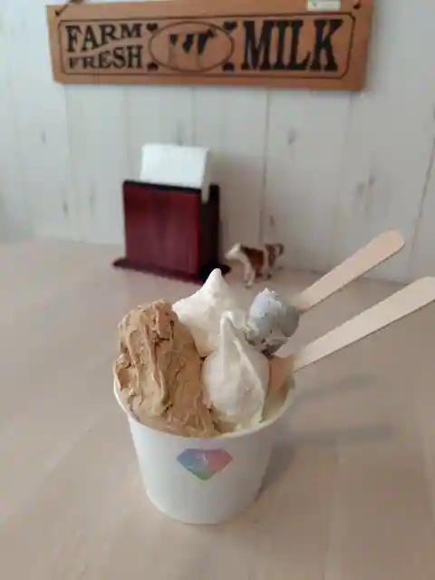
Kahokugata Bokujo Aisu Kobo Ragun Tsubata
もみの木カフェ
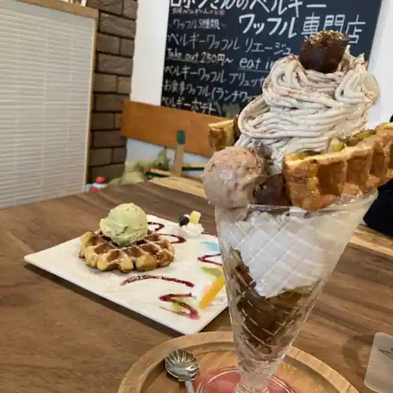
Momino Ki Cafe
風車 倶利迦羅不動寺山頂堂境内食堂
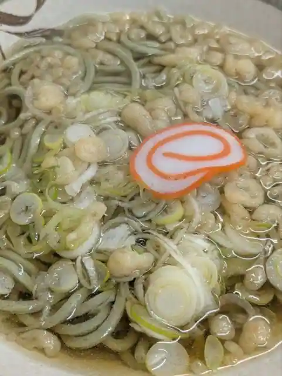
Fusha Kurikara Fudo Terayama Itadaki Do Keidai Shokudo
寿司本舗たまや
Sushi Honpo Tamaya
陶TO蕎麦 良喜庵
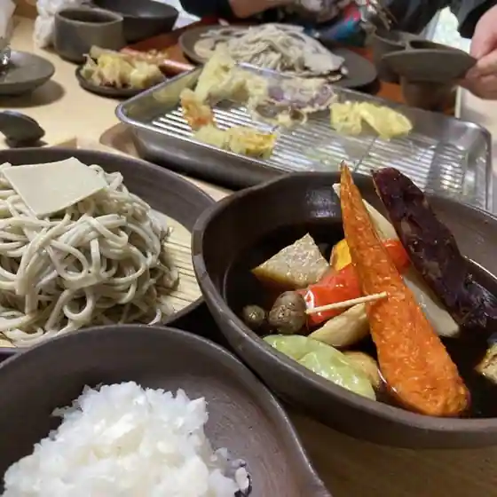
To TO Soba Ryo Ki Iori
ヤハタ スシベン 津幡店
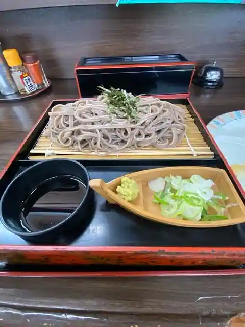
Yahata Sushiben Tsubata
あまやどり
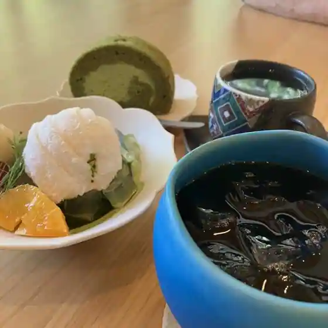
Amayadori
ゴンジロウ
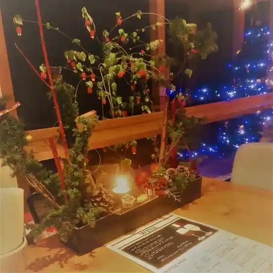
Gonjirou
高級食パン専門店 おい!なんだこれは! 津幡店
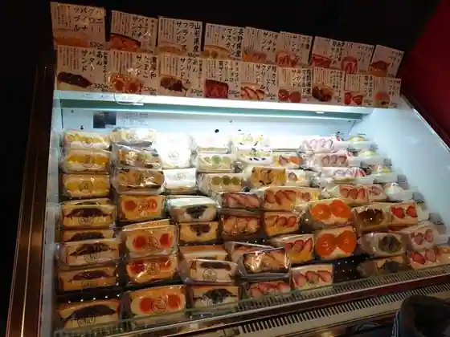
Kokyu Shoku Bakery Senmon Oi! Nandakoreha! Tsubata
茶房 いけ田
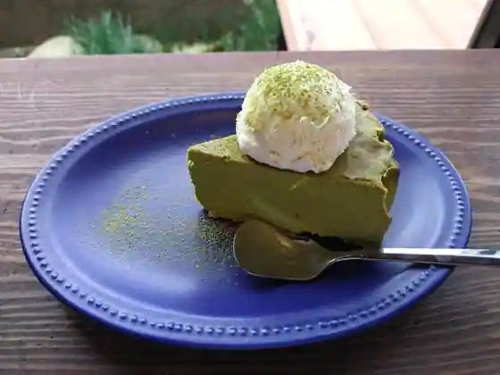
Sabo Ike Ta
ふぁすとふーど＆お米パン miron
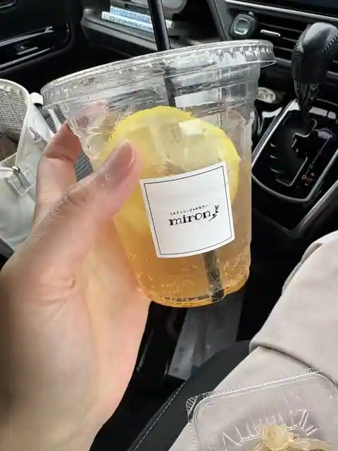
Fasutofudo & O Kome Bakery miron
与市
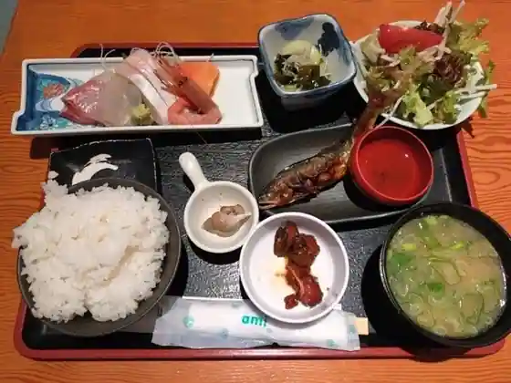
Yoichi
オハラ 津幡工場
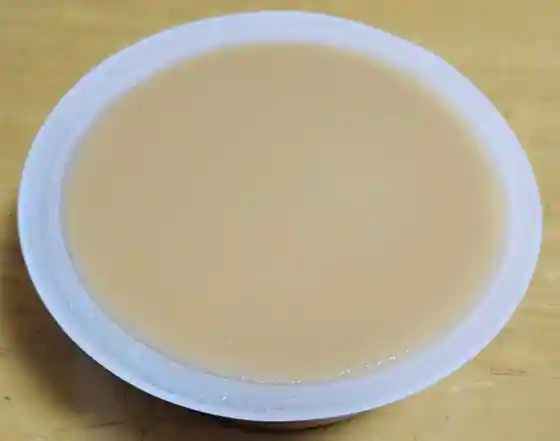
Ohara Tsubata Kojo
源平茶屋
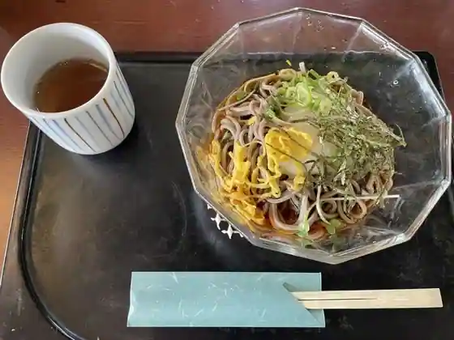
Genpei Chaya
加賀藩たかくら 本店
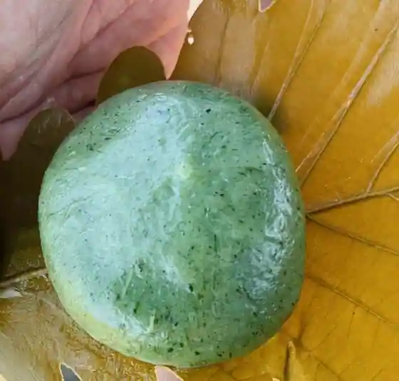
Kaga Han Takakura Hon
ミスターシェフ 津幡
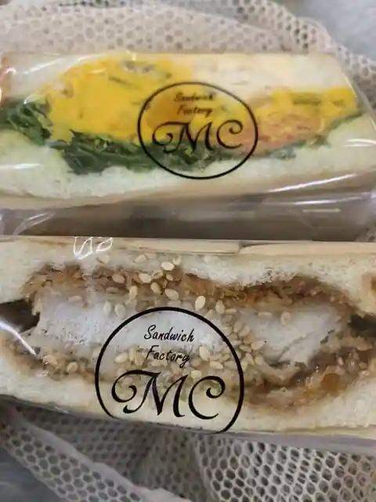
Misutashiefu Tsubata
ターボラ
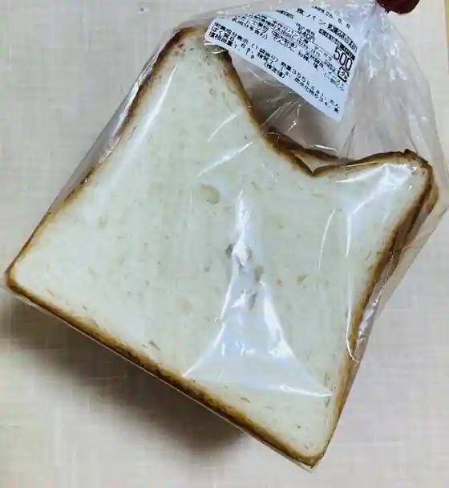
Tabora
森のレストラン
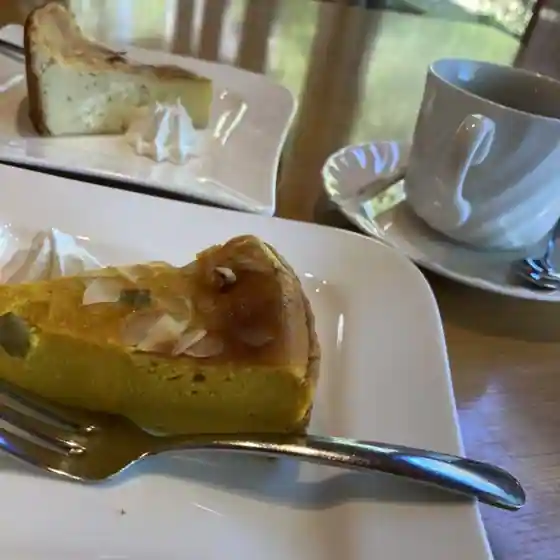
Mori No Restaurant
ソルア
Sorua
またいキッチン
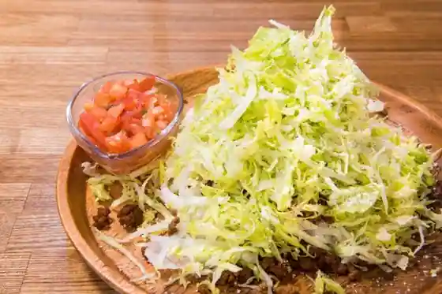
Matai Kitchen
森乃庵
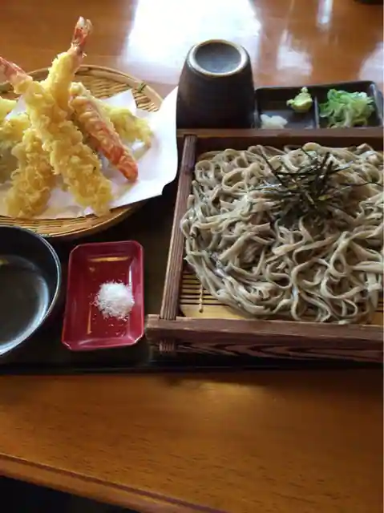
Morino Iori
Sights
Kurikara Fudo Tera Sancho Hondo

Kurikara Fudo Tera Nishi Yuki Bo Ho Dono

Kurikara Genpei Kosenjo
Roadside Station Kurikara Genpei no Sato Kurikara Juku

Kahoku Kata Kantaku Chi no Metasekoia Namiki

Kahoku Kata
Tsubata Kodomo Science Museum
Himawari Village
Ishikawaken Forest Park
Rekishi Kokudo (Hokurikudo Kurikara Toge)
Shinkansen no Mie Ru Oka Park
Ki Kubo Otaki
Kinshu no Hi
Kawa Ai Village Kinschule
Habu Farm Pezan
Roadside Station Kurikara Genpei no Sato Takebashi Kuchi
Tsubata Furusato Rekishikan
Taki no Tani Reisui
Tsubata Joshi
Kuze Shuzo Mise
Tsubata Kanko Boranteiagaido (Tsubata Furusato Tanteidan)
Tsubata Town Hall